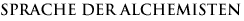

|
|
 |
| Die verschleierte Statue der Isis |
|
|
|
|
| |
Auf dem angeblichen Grab der Isis in der Nähe von Memphis befand sich eine Statue, die mit einem schwarzen Schleier verhüllt war. In den Sockel der Statue war folgende Inschrift eingraviert: „Ich bin alles, was war [QUID FUIT], was ist [QUID EST] und was sein wird [QUID ERIT] und noch kein Sterblicher hat es gewagt, meinen Schleier zu lüften.“
Unter diesem Schleier liegen alle Geheimnisse und das Wissen der Vergangenheit verborgen... Das Entfernen des Schleiers der Isis steht symbolisch für die Offenbarung des Lichts. Wem es gelingt, den Schleier der Isis zu lüften, der wird unsterblich.
|
| |
| Jeder konnte und musste als Individuum selbst entscheiden, ob er dem Heilsweg folgen wollte. Daher hatte die ägyptische Religion keinen missionarischen Anspruch. Sie war weltoffen und gnädig zu ihren Anhängern. Für die alten Ägypter lag der Schlüssel zum Wissen über die Welt nur in ihren Tempeln. Nie wollten sie anderen dieses Wissen aufzwingen. Daher nahmen sie nur widerwillig einige griechische Studenten auf, denen ihre Unwissenheit und Geschwätzigkeit vorgeworfen wurde. Sie trugen die Namen Homer, Solon, Pythagoras, Demokrit, Eudoxos, Herodot, Iamblichos, Platon, Plutarch und Thales. |
| |
| Dennoch waren es die Griechen, die den Ruf Ägyptens überall verkündeten und den Kult der Isis und der Osiris in ganz Europa verbreiteten – ein Paradox, das sich nur aus der Geschichte heraus verstehen lässt. Sie waren es, die einige Aspekte der Weisheit der alten Priester offenbarten. Dabei verschwiegen sie aus Ehrfurcht, was sie über den in den Heiligtümern verborgenen Schlüssel zur Erkenntnis wussten. In der Redekunst bewandert, konnten sie den Schleier der Isis über den nur Eingeweihten vorbehaltenen Geheimnissen belassen, zu deren Hütern sie nun geworden waren. |
| |
| Heute, am Anfang des dritten Jahrtausends, scheinen Licht und Erkenntnis wieder verdunkelt zu sein, Mythen und Gottheiten haben sich unseren Blicken entzogen. Niemand besingt mehr die Erscheinung der Götter, kein Pharao heißt mehr die Sonne willkommen. Dennoch richten sich alle Augen auf Ägypten, wenn die Nacht unser Bewusstsein ergreift. Es ist noch immer in diesem Spiegel des Himmels, wo die himmlischen Lichter leuchten. Wir müssen nur hinsehen und unser Bewusstsein öffnen. Guillaume Apollinaire hat es so formuliert: „Es ist höchste Zeit, die Sterne wieder anzuzünden.“ |
| |
„Weißt Du nicht, Asklepiades, dass Ägypten das Abbild des Himmels ist [...] der Ort, auf den sich all die von den Himmelskräften gelenkten Geschehnisse übertragen ? Vielmehr noch: Unsere Heimat ist der Tempel der gesamten Welt.“
Hermes Trismegistos, Corpus Hermeticum II
|
| |
| |
|  |
|
| Die Sprache der Alchemisten setzt sich aus Symbolen und Allegorien zusammen, die für einen Nichteingeweihten unverständlich sind. Sogar die Abbildungen in den alchemistischen Abhandlungen sind wahre Bilderrätsel, die sich aus Menschen, Tieren, Landschaften, Göttern der Mythologie und geometrische Formen zusammensetzen und eine allegorische Erklärung der Prozesse des Großen Werks darstellen. |
|
|
| 1- Geometrische Symbole |
|
|
| Die vier Elemente haben ihre eigenen Bilder in Form von einfachen, oder mit einer Linie überschnittenen Dreiecken mit kleinem oder grossem Winkel. |
|
|
| Die vier Elemente ergeben zusammengenommen das Bild eines Sterns mit sechs Spitzen. |
|
|
| Das einfache Dreieck entspricht der Materie, aus dem der Stein der Weisen besteht, und die in drei Stufen bereitet werden kann (Schwärzung - Weißung - Rotfärbung) und ein Viereck entspricht derselben Materie, die unter Verwendung der 4 Elemente hergestellt wird. Die beiden ineinander verschachtelten Formen symbolisieren die Bereitung des Steins durch die Kombination beider Wege. |
|
|
| Die Ziffern spielen ebenfalls eine wichtige Rolle. Dazu ein sprechendes Beispiel: die Zahl 10 symbolisiert den Urstoff und ergibt sich aus folgender Addition: |
|
|
| 1 (Urstoff) + 2 (das Feste und das Flüchtige) + 3 (3 Prinzipien) + 4 (4 Elemente) = 10 |
|
| 2- Bestiarium der Alchemie |
|
| In den alchemistischen Bilderrätseln spielen sowohl tatsächlich existierende Tiere als auch Fabeltiere eine wichtige Rolle. Ihre Bedeutung ist zumeist komplex und recht frei interpretierbar, doch sind trotz allem einige Regeln erkennbar: |
|
| - Elemente: |
| Wasser = Wal, Fisch oder Gott Neptun |
| Erde = Löwe, Stier |
| Feuer = Salamander, Drache oder Schwert oder Sense oder der Gott Mars |
| Luft = Adler |
|
| - Metalle: |
|
| Mercure = Fliegender Adler |
| Antimon = Wolf |
| Schwefel oder Gold = Hund |
|
| Alle Symbole lassen sich miteinander kombinieren, um auf einen bestimmten Prozess zu verweisen. So wird die Fäulnis von Gold durch Antimon mit einem Hund symbolisiert, der von einem Wolf gefressen wird. |
|
| - Das Feste (Schwefel) und das Flüchtige (Merkur): |
|
| Die beiden Komponenten werden mithilfe von Tieren gleicher Art, aber unterschiedlichen Geschlechts dargestellt. Das männliche Tier verkörpert das Feste und das weibliche Tier das Flüchtige. Bei der Paarung dargestellt symbolisieren die Tiere die Vereinigung (Conjunctio) der Elemente Schwefel und Merkur. Kämpfende Tiere stehen je nach ihrer Haltung für die flüchtige Fixierung oder die feste Verflüchtigung. |
|
| 2 in einem Bild verkörperte Elemente verweisen ebenfalls auf den Schwefel als das Feste und den Merkur als das Flüchtige. |
|
| Generell stehen Flügel für das flüchtige Prinzip, während mit dem Fehlen von Flügeln das Feste ausgedrückt wird. |
|
| 3- Verhältnis der Pflanzen zum Körper |
|
| Alchemisten knüpfen enge Verbindungen zwischen dem Menschen und den Sternen sowie dem Pflanzen- und dem Mineralreich. |
|
Sonne: Hahnenfuß, Kamille, Sonnenblume
Mond: Salbei, Lilie, Mohn
Merkur: Farn, Lavendel, Maiglöckchen
Venus: Kirschbaum, Rose, Heckenrose, Eisenkraut
Mars: Basilikum, Enzian, Wermut
Jupiter: Feldthymian, Melisse, Kerbel
Saturne: Ulme, Schierling, Stechpalme |
|
| Jedem Planeten entspricht neben einem Metall auch ein lebenswichtiges Organ. |
|
| Sonne |
Gold |
Herz |
| Mond |
Silber |
Gehirn |
| Erde |
Antimon |
Blut |
| Merkur |
Merkur |
Nervensystem |
| Venus |
Kupfer |
Nieren |
| Mars |
Eisen |
Gallenblase |
| Jupiter |
Zinn |
Leber |
| Saturn |
Blei |
Knochen |
|
|
| 4- Prozesse des Großen Werks |
|
| Für jeden einzelnen Prozess gibt es die unterschiedlichsten Darstellungen und doch lassen sich aus dieser Vielfalt bestimmte Prinzipien herauskristallisieren. |
|
| Bär, Wildschwein, Widder, Esel, Wolf, Hund und Schildkröte verkörpern die Urmaterie, die auch Urstoff des Großen Werks genannt wird. |
|
| Ein Zimmer, in dem ein König und eine Königin eingesperrt sind, symbolisiert das philosophische Ei. |
|
| Ein in den Lüften fliegender Vogel steht für die Verflüchtigung, während ein landender Vogel die Weißung symbolisiert. |
|
| Ein Bad verweist auf die Lösung von Gold und Silber und steht damit für die Reinigung. |
|
| Die Fäulnis wird mit dem Kampf zweier Drachen, einem Raben oder dem Chaos dargestellt, wobei die Farbe Schwarz auf die Stufe der Schwärzung im Großen Werk verweist. |
|
| Die von einem Priester zelebrierte Hochzeit symbolisiert die Vereinigung von Schwefel und Merkur, wobei das Salz die Zuordnung der beiden Prinzipien ermöglicht. Das Feste und das Flüchtige können zusammengenommen auch durch einen Greif dargestellt werden, also einem altorientalischen Fabelwesen mit Adlerkopf, Flügeln, Krallen und Löwenleib. |
|
| Ein Baum, in dessen Zweigen mehrere Sonnen zu sehen sind, ein Löwe oder ein Kind, das eine Krone und einen roten Königsmantel trägt, steht für das Große Werk bzw. den Stein der Weisen. Die Rotfärbung und damit die letzte Phase der Transmutation, wird mit dem Bild eines Phönix dargestellt, dem Vogel des Hermes, der sich verjüngt aus der Asche erhebt. |
|